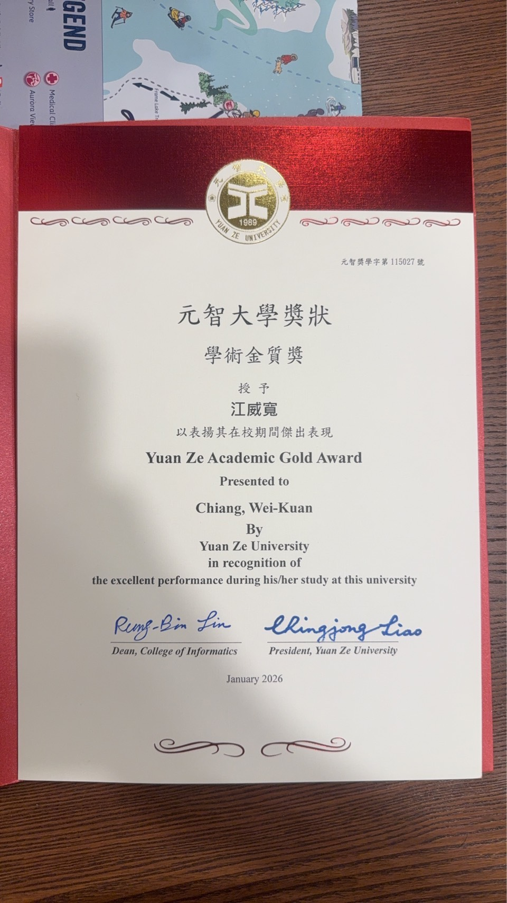
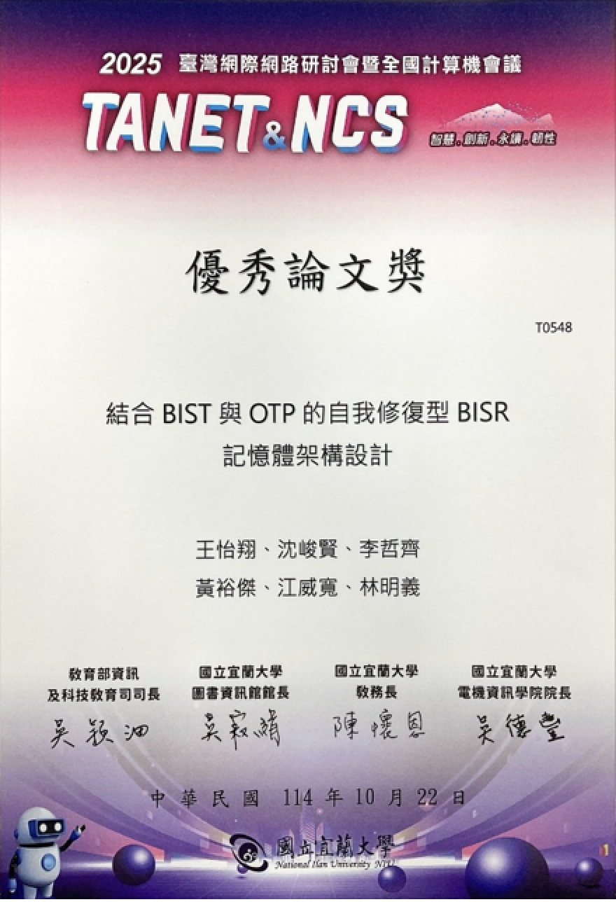
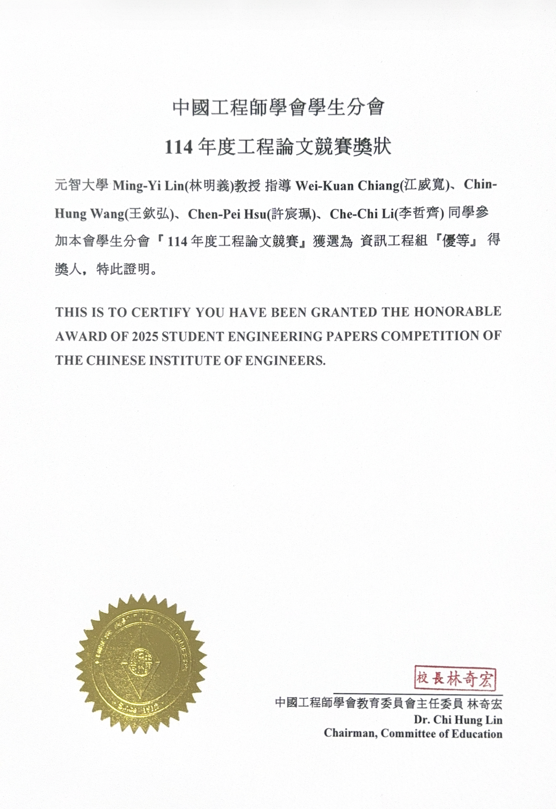

RECOGNITION
Honors & Awards
Academic recognition, engineering research, cybersecurity, and competitive programming.

Academic Gold AwardYuan Ze University · 2026
Outstanding Paper AwardTANET & NCS · 2025
Second Place, Engineering Paper CompetitionChinese Institute of Engineers · 2025- Academic Gold AwardYuan Ze University
- Honorable MentionNational Creative and Intelligent Technology Competition
- Outstanding Paper AwardTANET & NCS 2025
- Second PlaceEngineering Paper Competition, Student Branch, Chinese Institute of Engineers
- Top 10 FinalistShalun Cybersecurity Newcomer Matchmaking and Cultivation Program, Ministry of Digital Affairs
- Honorable MentionICPC Asia Taichung Regional Programming Contest
- Bronze MentionICPC Asia Taiwan Online Programming Contest
- Bronze MentionICPC Taiwan Private University Programming Contest
- Honorable MentionICPC Taiwan Private University Programming Contest